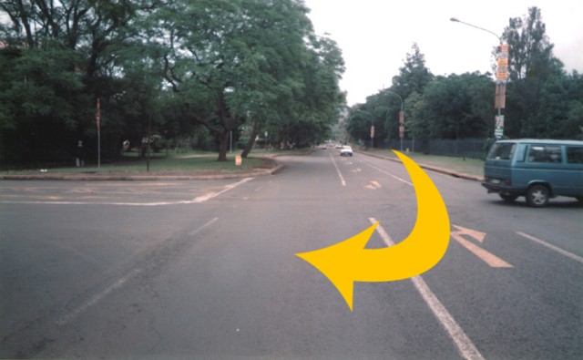
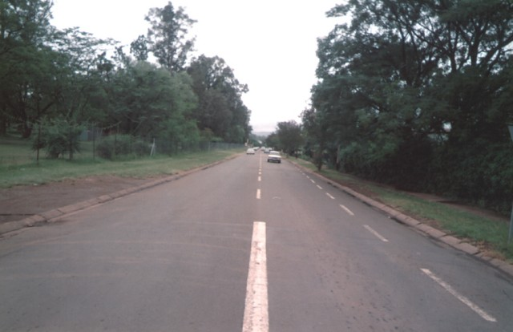
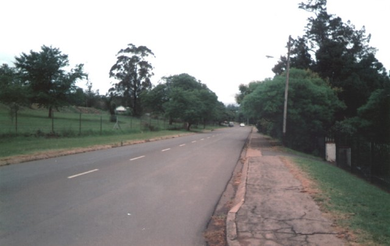
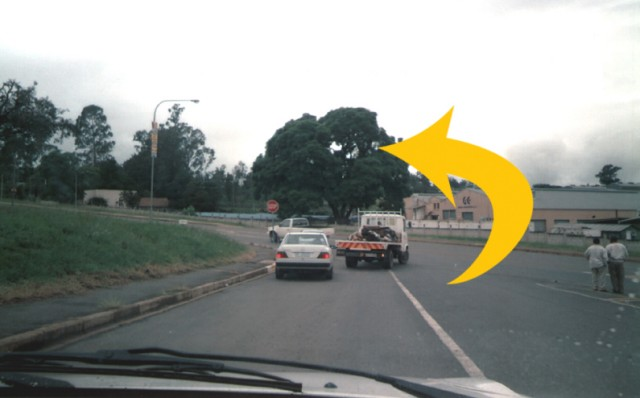
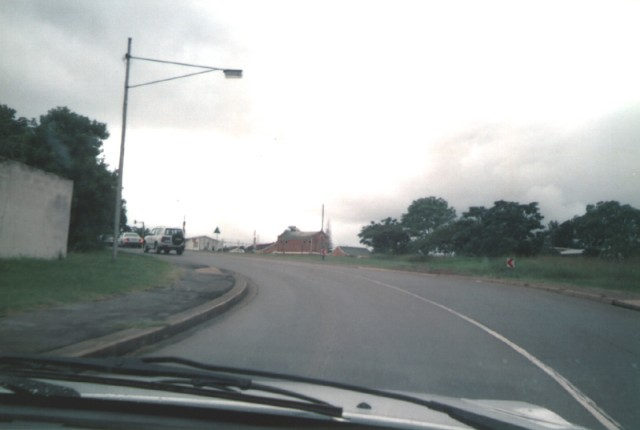
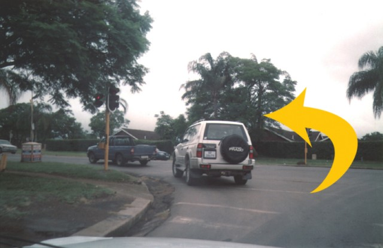

Return to racingcircuits.net's Photo Archive Main Index
Alexandra Park - Angel's Angle to Final Corner
|| Contents | Alexandra Road to College Road | Angels Angle to Final Corner || Home ||
Click on the hyperlinks above to view photographs of that
section.
The numbers and arrows on the map represent the location of where each of the
photographs were taken.
Return to racingcircuits.net's Photo
Archive Main Index

07 - Looking back down College road from Angels Angle from Topham Road.

08 - Topham Road.

09 - Topham Road kink ahead.

10 - Shimiyan Bend.

11 - Kink before left onto Alexandra Road.

12 - Final left onto the Alexandra Road Main Straight.
Photographs and text ©Paul Minnaar. Reproduced here with kind permission. Additional information kindly supplied by Marius Matthee.